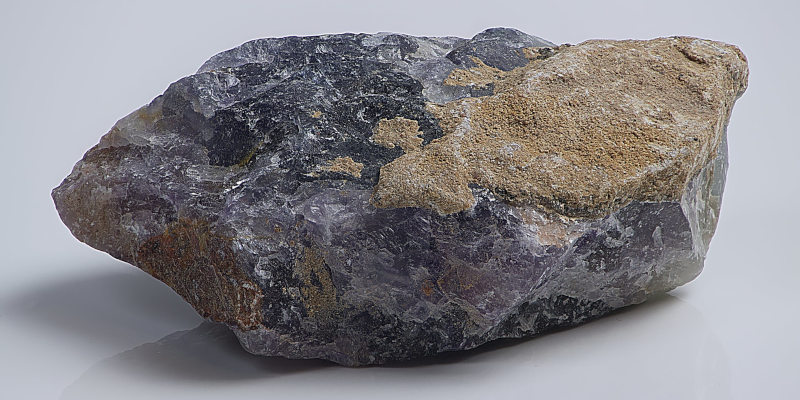

Boring On Purpose
2024-03-21

I'm in my late 40's and have limited time and energy. Thankfully, I don’t feel the need to live up to anyone's expectations, prove anything, or impress people. I'm content with what I have and where I'm at. I am boring on purpose to save money and drive away people who want to waste my time, use me, and/or abuse me.
Shallow arrogent people feel they are superior, special, and above others. They are impressed by status, expensive things, and wealth. I don't agree with this worldview so I prefer to avoid most people. I spend my time doing things I enjoy that benefit me. Things most people would think are boring.
Interests
I'm improving my skills in graphic design and UX/UI design. Learning takes time and is not exciting or flashy. But I find it rewarding.
- Expense - Going to events, travel, or activities involving people tend to be expensive. I prefer to stay home and save money.
- Avoidance - Generally speaking people tend to complain about their problems to gain attention, brag about their accomplishments to get praise, and play power games to establish dominance. All of these behaviors waste my time and annoy me. I have better things to do with my limited free time.
At one time or another we’ve all had someone try and impress us with something they’ve done or an object they own. No one likes a bragger. They come across as needy or arrogant. I’m never been impressed by these kinds of superficial things.
The shallow people who are impressed by materialistic things are usually users who play manipulative games in an attempt to get something for nothing. I refuse to waste my time on them.
I prefer to spend my time on topics and activities that give me a good ROI. If a topic or activity doesn’t add a day to my life or a dollar to my pocket, I don’t care.